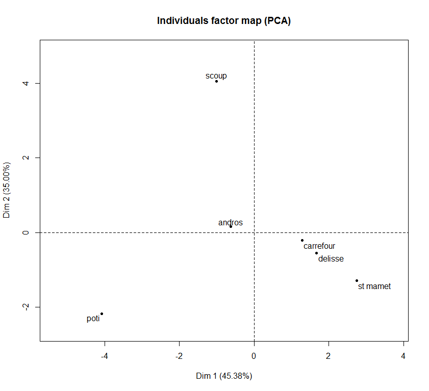
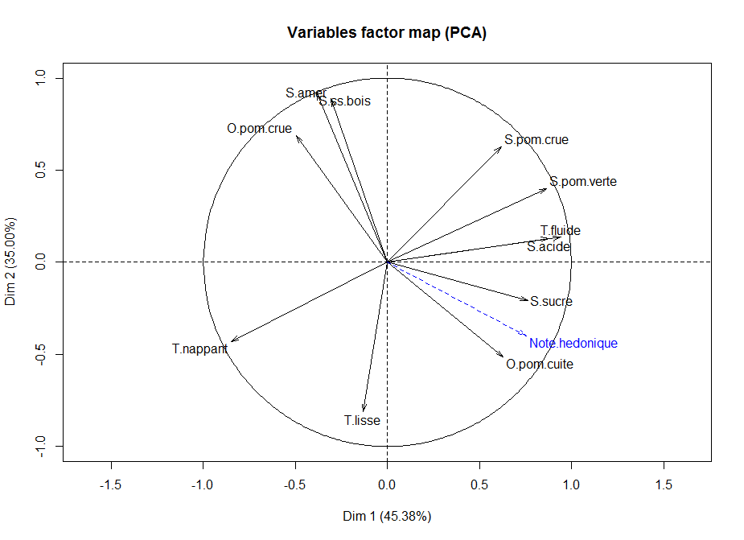

Exercice d'ACP : lecture de graphiques et sorties numériques
Lors d'une analyse sensorielle, un jury a évalué six compotes de pomme selon une liste de 11 descripteurs comme l'acidité, l'amertume, la saveur de pomme crue, etc. Les notes ont été regroupées dans un tableau croisant en lignes les compotes de pomme, en colonnes les descripteurs et dans une case du tableau la note pour un produit et un descripteur. Les descripteurs sont de trois sortes, saveur (S), texture (T) ou odeur (O). Par exemple S.sucre correspond à la saveur sucrée. Par ailleurs, une note d'appréciation (note hédonique) a été donnée à chaque compote. Une ACP a été réalisée sur le tableau de données, la note d'appréciation ayant été mise en tant que variable supplémentaire. Les graphes des individus et des variables sont fournis ci-dessous.
 
Pour chaque question, cocher la ou les affirmations vraies.